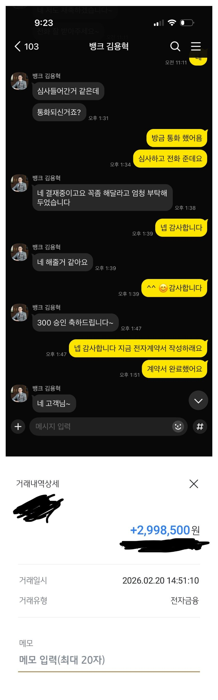

[주부대출 ] 김용혁이사님,이현섭과장님 감사합니다

(대출조건)
재직기간 : 2달
기대출 : 대부업체 2곳과 학자금대출포함 총 1400만원정도
신용점수: 나이스 809점
월수입 : 100만원
연체 : 무
4대보험 : 무
급하게 필요했는데 고민하다가 뱅크앤론 문을 두드렸고 도움 요청했는데
수입이 많이 없어서 걱정했어요
하지만 이현섭과장님께서 서류 준비 도와주시고 김용혁이사님께서 끝까지 포기하지 않으시고 좋은 결과 나올수있게 힘써주시고 도와주셔서 감사합니다
너무 감정이 벅차네요
감사합니다